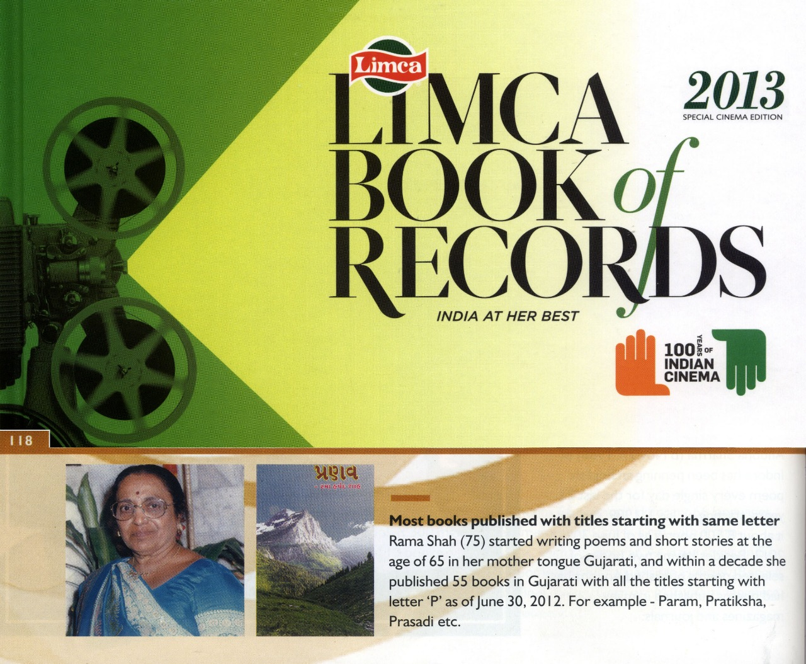

| Types | |
|---|---|
|
|
|

Rama Shah was awarded the Limca Book of World Records in the year 2013.
|
|
Here you can write a detailed overview of Rama Shah’s work in prose—novels, essays, and other narrative forms.
Detail Rama Shah’s poetry collections, themes, and notable verses here.
Describe any haiku collections or individual haiku Rama Shah has published.
Rama Shah has received numerous accolades for her literary contributions, including the prestigious Limca Book of World Records in 2013 for her exceptional work in prose and poetry.